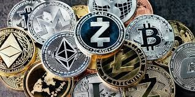

- Install a reputed Indian crypto exchange such as:
- Coinswitch
- WazirX
- CoinDCX
- Bitbns
- Zebpay
- Set up your account by registering and verifying your KYC. Make sure you enable 2 Factor authentication to make your app super secure.
- Add your bank details/UPI details to the app. You can add money to the exchange once your bank details/UPI are registered.
- Once the money has been deposited into an exchange, you can use it to buy Bitcoin, or any other cryptocurrency available for purchase.
Cryptocurrency
What Is Cryptocurrency?
A cryptocurrency is a virtual or digital currency that can be used to buy goods and services; which implies there’s no physical coin or bill used and all the transactions take place online. It used an online ledger with strong cryptography to ensure that online transactions are completely secure. It is a purely virtual line of currency that runs on the system of cryptography. It functions as a decentralised medium of exchange where cryptography is used to verify and facilitate each transaction. Cryptography also underlines the creation of units of different cryptocurrencies.
How Does Cryptocurrency Work?
This mode of exchange primarily runs on the blockchain technology – that which lends cryptocurrencies the decentralised status. It is a shared public ledger that contains all the transactions that have ever taken place within a network. Therefore, everyone on the network can see each transaction that takes place and also view others balances.
The Blockchain technology addresses one of the primary concerns with digital payment platforms, i.e. double-spending while ensuring there is no monopoly of authority. That is because, in blockchain technology, parties to a transaction themselves verify and facilitate every such activity.
Uses Of Cryptocurrency- As a mode of payment
- Initially, Bitcoin had little value as a mode of payment to merchants. However, with time, several merchants worldwide like restaurants, flights, jewellers, and apps have come to accept it as a viable payment medium.
- Investment
- Cryptocurrencies, especially Bitcoin, is one of the most lucrative investment options currently present. Its value appreciation is supremely dynamic and can prove to be an excellent avenue for capital expansion. However, individuals must also note the volatility of this investment avenue. Bitcoin, has experienced some of the most erratic price changes as an asset.
Types Of Cryptocurrency
- Bitcoin
- It is the first cryptocurrency that was ever introduced and is considered the “digital gold”. It currently holds a market capitalization of $900+ billion, the largest of any other variant of cryptocurrency. A unit of Bitcoin can be broken down into Satoshi’s, which is equivalent to the relationship of rupees and paise. Furthermore, the Bitcoin network is so designed that it can only have 21 million units of Bitcoin circulation at any point in time. This limited availability is a primary component that drives its market price. Currently, the market supply of Bitcoin is 18.39 million.
- Altcoins
- This category primarily involves forks and alternate versions of Bitcoin, thus, the name. However, some Altcoins are exponentially different from Bitcoin and use varying algorithms. For instance, Ethereum, which is an altcoin, is not a currency but a platform where entities can make their apps based on blockchain. Currently, there are more than a thousand altcoins. Some of the notable altcoins are Ethereum, Factom, Litecoin, NEO, etc.
- Tokens
- These are products of altcoins like Ethereum and NEO. These cryptocurrencies do not have a separate blockchain but instead run on the decentralized apps created via such altcoins. However, tokens carry supremely low value compared to the other two types mentioned above, because it can only be used to purchase items from such decentralized apps or dApps.
How To Buy Cryptocurrency
Indian Govt Stance On Crypto
Discussions for proposed legislation that would usher in a blanket ban on cryptocurrency use in India are in the final stages. The government has been saying for months it plans to rein in private use of cryptocurrency while providing the legal framework for India’s Reserve Bank (RBI) to issue its own central bank digital coin. Minister of State for Finance Anurag Thakur said on March 6 that the government was looking into national security risks posed by cryptocurrencies ahead of a decision on whether to ban them.
SUMMARY: Government has not yet decided whether to ban crypto, it is in a grey area.